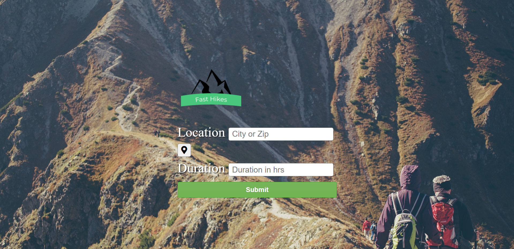
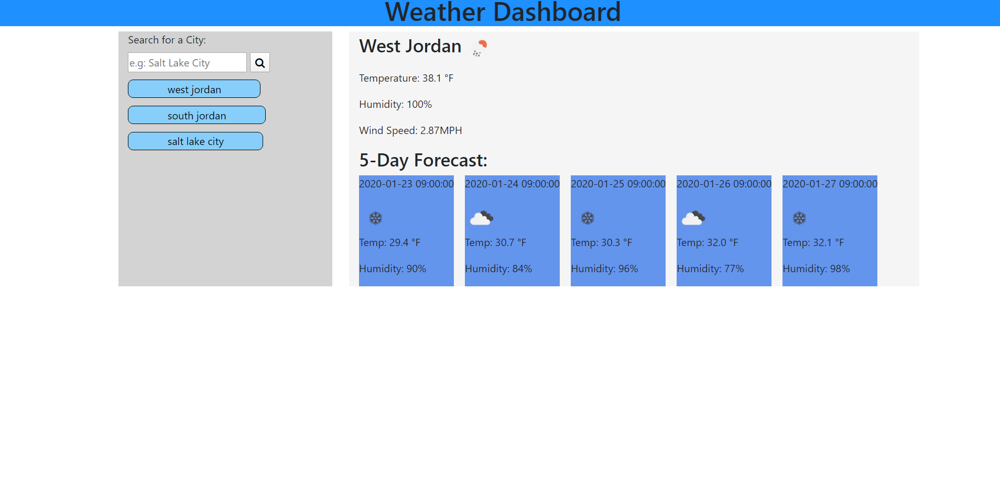
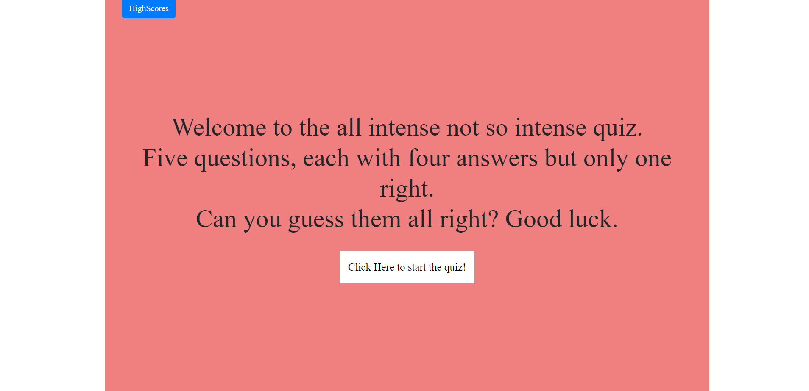
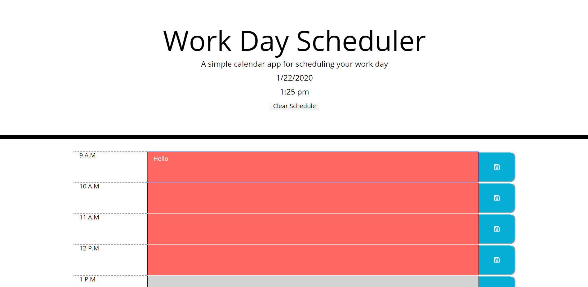
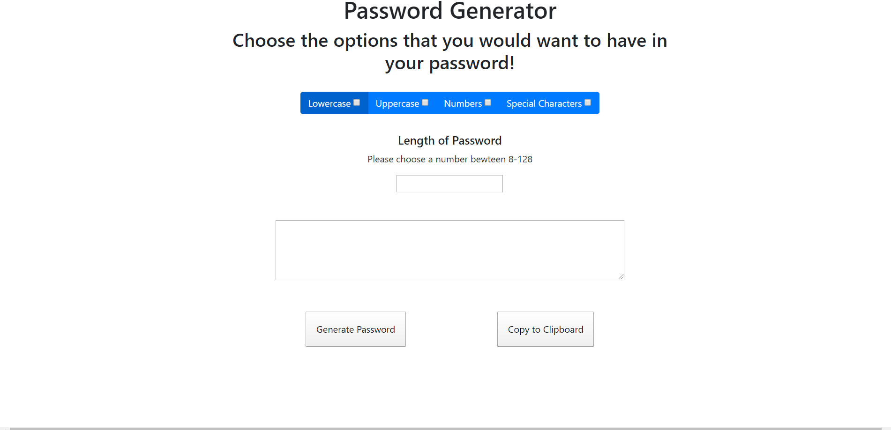

Project One: This was a group project collaboration with two classmates. This project is a hike finder that takes the amount of time the user has to drive to
hike the trail, and drive back to their current destination. The way this program works is with two seperate API calls. One that pulls hikes from Open Trails and the other being Google maps API. These allow us to pull the hikes that are presented
in the user's entered city. Google maps figures out how for the users distance is from the hike and calculates accordingly.
Github RepoDeployed
Weather App: Weather App checks if the city you are visiting is either raining or sunny! When the page has been loaded
the user has to enter the desired city they are wanted to check. Once a city has been selected they will be presented with a current day weather report and the next follow five day. The program has an API call that pulls
information from Openweather's API.
Github RepoDeployed
Quiz: Quiz game that has been coded and you have to run through the quiz. Once the start quiz buttons is initiated the user is
is prompted with a question and four different answers and a timer of 75 seconds. If the user were to choose the wrong answer, they would lose 15 seconds off their timer and the question
would not advance to the next one until the user gets the answer right. Once all the questions are completed, the user will be presented their score and they have the option to save it in their
local storage to keep track of their scores.
Github RepoDeployed
Day Planner: Day planner helps the user keep their busy day organized by logging what they need to do in a certain hour of the day. This planner changes
color depending on the hour of the day. If it is past tense the hour would appear red, current is gray, and future is green. The user can also click the save button to save what they logged, this way
if the user refreshed the page. The page will still have the information they logged thus keeping their day more oranized!
Github RepoDeployed
Password Generator: A program that can randomly generate
a password depending on what the user specifies. The options the users have are: upper and lower case lettter, numbers, and special characters. When the user chooses
what they wanted, the next step is to choose the length. Once the length is chosen, they have to click generate password and a random password will be created with an
option to clip it to the clipboard
Github RepoDeployed